What is Terraform?
Terraform is an open-source tool for building and changing infrastructure safetly and efficiently.
Terraform uses a Push approach, and therefore initiates the provisioning process by interacting directly with providers to communicate the desired infrastructure.
Terraform itself is a CLI tool, and can be downloaded from ‘the official release page’. It is developed by Hashicorp so, naturally, relies on the HashiCorp Configuration Language (HCL) for creating declarations. HCL strives to be both human and machine friendly, being fully JSON compatible while also supporting comments and variable interpolation etc. Terraform files themselves are referred to as ‘configuration files’ and have the file extensions .tf and .tf.json.
What is infrastructure as code?
It consists of managing a set of resources (computing, network, storage, etc.) using the same approach developers use to manage application code.
Using Infrastructure as Code as part of your deployment process has a number of immediate benefits to your workflow:
Speed
This one speaks for itself really, automation beats manually navigating through an interface to deploy and connect up resources, hands down.
Relaiblity
With a large set of infrastructure, it becomes so easy to misconfigure a resource or provision the services in the wrong order. With IaC the resources will be configured exactly as declared, and implicit/explicit dependencies can be used to ensure the creation order.
Expermentation
With the ease at which the infrastructure can be deployed, experimental changes can be readily investigated with scaled down resources to minimise the cost. Once approved, everything can be scaled up for production deployments.
Why Terraform ?
Features Of Terraform
Terraform lets you define infrastructure in config/code and will enable you to rebuild/change and track changes to infrastructure with ease. Terraform provides a high-level description of infrastructure.
Terraform is the only sophisticated tool that is completely platform agnostic as well as supports other services while there are a few alternatives, but they are focused on a single cloud provider.
Terraform enables you to implement all kinds of coding principles like having your code in source control, the ability to write automated tests, etc
Terraform is the right tool for infrastructure management as many other tools have a severe impedance mismatch from trying to wrangle an API designed for configuring management to control an infrastructure environment. Instead, Terraform matches correctly with what you want to do- the API aligns with the way you think about infrastructure.
Terraform has a lively community and is open source; there is a massive community developing around this tool. Many people are already using it, and it’s easier to find people who know how to use it, plugins, extensions, professional support, etc. This also means Terraform is evolving at a much faster rate. They do releases very often.
Terraform’s speed and operations are exceptional. One cool thing about Terraform is, it’s plan command lets you see what changes you’re about to apply before you apply them. Code reuse feature and Terraform tends to make most changes faster than similar tools like CloudFormation.
Terraform vs Chef
Chef is a configuration management tool, versus the provisioning tool that Terraform is.
Chef is concerned with installation and management of software on existing servers, while Terraform provisions the servers themselves. In this case, when using Docker or Packer, Terraform is a better choice than a configuration management tool.
Chef defaults to a mutable infrastructure paradigm leading to hard to diagnose configuration bugs, but Terraform treats every change as a deployment of a new service configuration.
Chef also represents a procedural style to code writing and requires running a master server for state storing as well as agent software on each configurable server.
Terraform vs Puppet
Similarly to Chef, Puppet is also a configuration management tool used to install and manage software on already existing servers.
It also requires a master server for storing the infrastructure state as well as installation of an agent software for installing the latest configuration management updates.
Puppet is also 4 years older than Chef (released in 2005). However, Puppet has a more declarative style, just like Terraform.
Terraform vs Ansible
Every growing startup or tech organization wants to automate apps and IT infrastructure.
Ansible is a simple way to do that. An open-source software provisioning, configuration management, and application-deployment tool comes with its own declarative language. Ansible is an automation tool that helps drive complexity away and accelerate DevOps initiatives.
Terraform acts like an orchestrator, using Packer for automation. Terraform is more of an infrastructure provisioning tool. Terraform talks to VMWare, AWS, GCP, and deploys infrastructure. From the house of HashiCorp, Terraform allows the creation, management and improvement of infrastructure. An open source code drives APIs into declarative configuration files.
Terraform vs CloudFormation
CloudFormation is similar to Terraform thanks to its declarative style.
It is also a provisioning tool, just like Terraform.
However, from other tools, CloudFormation is the only non-open-source one. The tool belongs to AWS services, which means it can only be used within the AWS scope.
Workflow of Terraform
notes
Terraform Commands
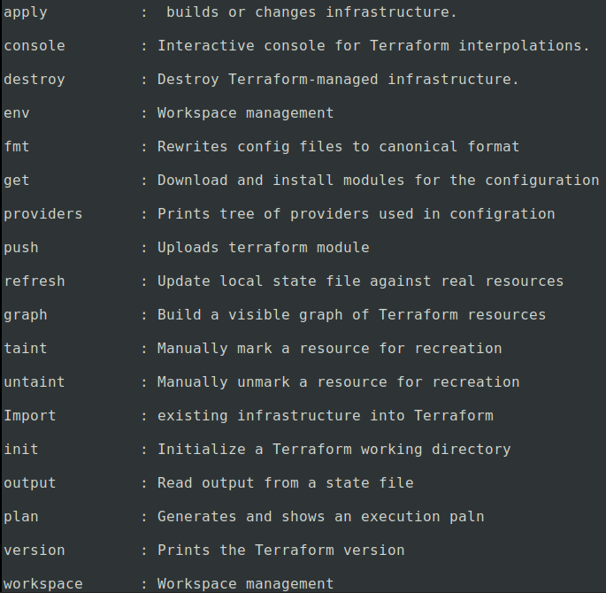
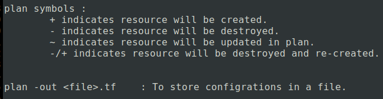
Terraform Basics
Variables
To make infrastructure code re-usable and version controlled, we need to paramterized the configrations with help of variables.
Variables can be defined as :
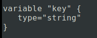
The arguments that are accepted within block body (between {})
type :
Valid values are string,list and map. If no type field is provided, variable type willbe inferred based on default. Ifno default is provided, it is assumed as string.
default :
It sets default value for a variable.
description :
A human-friendly description of variable.
Example :
Lets create a variable.tf file and provider.tf file.
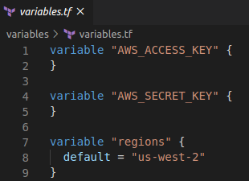
To access variables, provide variable prefixxed with "var".
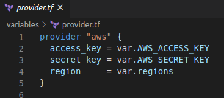
Variable type field values
String :
String values are simple and represent a basic key to value mapping where the key is the variable name.
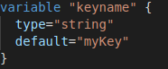
A multi-line string value can be provided using heredoc syntax.
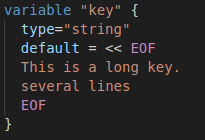
Map:
A map value is a lookup table from string keys to string values. This is useful for selecting a value based on some other provided value.
A common use of maps is to create a table of machine images per region :
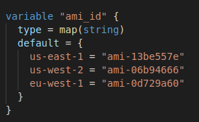
List :
String indexed by integers starting from zero.
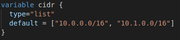
Boolean:
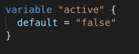
Environmemt Variables :
Used to set the value of an input variable in the root module.
Name of env variable must be TF_VAR followed by variable name and value of variable.
Example :
$ TF_VAR_image=ami-b374d5a5
$ TF_VAR_amis='["ami-abc123" , "ami-qer123"]'
Variable File
To persist variable values, create a file and assign variables within "terraform.tfvars" file.
Terraform automatically loads them to populate variables.
If the file is located somewhere else, you can pass the path of file using "-var-file" flag.

$ terraform apply -var-file=vars1.tfvars
Outputs
While creating complex infrastructures , terraform stores all attribute values for all your responses. But you may only be interested in a few values such as ip address, load balancer ip, VPN address etc.
Output define values taht will be highlighted to the user when terraform aaplies and can be queried easily using "output command".
Defining outputs :
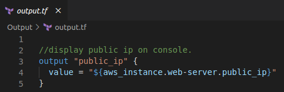
Outputs can be marked as containing sensitive material by setting sensitive attribute to true.
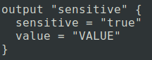
Viewing Outputs
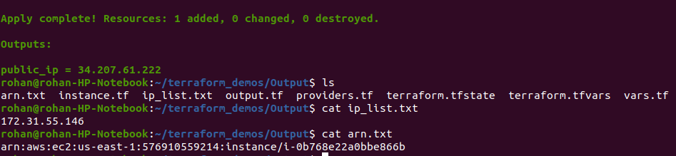
Outputs is listed in another file.
Data sources
A lot of data is available by AWS, in a structured format using the API.
Terraform also exposes this information using datasources.
Data source provides with dynamic information,that can always change, that you can then use as an input in Terraform and then use it.
For example, there's a datasource that provides you with a list of "AMIs" or a list of availability zones.
Another great example is a datasource that gives you all IP addresses in use by AWS.
Here is an example which is used to get available subnets in a vpc.
I have a vpc which i have given a tag as "Name" and value as "My_TF_Demo"
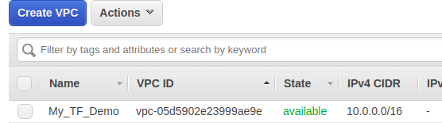
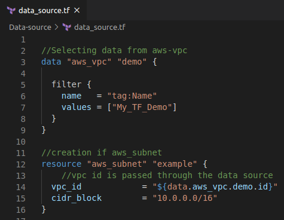
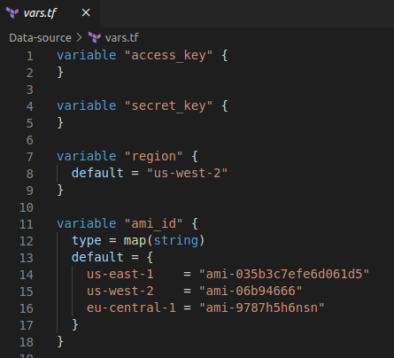
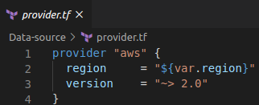
Output :
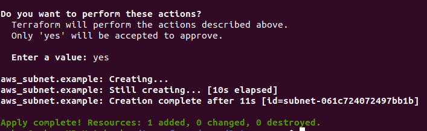
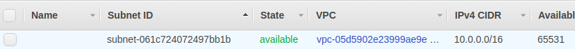
Iterations
Terraform does not have for loops like other traditional procedural languages.
However, terraform resource has a meta-parameter called "count".
This parameter defines how many copies of resource to create.
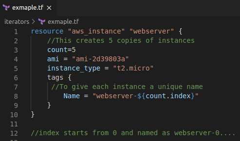
To create instances in multiple zones :
Create instances in different availabilty zone using count.index and element function.
Using List Method :
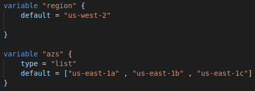
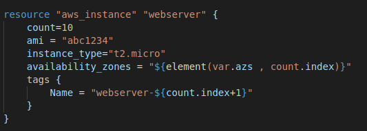
Using data source :
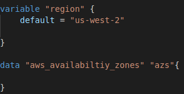
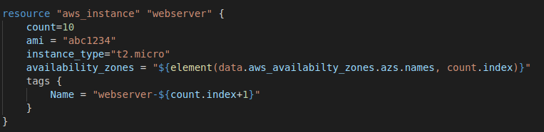
Here count(10) is greater than availabilty zone(3).
In this case , element function will automatically a "wrap" around using a standard mod function.
Therefore, above code will create 10 instances as follows :
4 in us-east-1a
3 in us-east-1b
3 in us-east-1c
To output ip addresses of all instances :
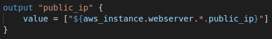
Provisioners
Terraform not only helps in infrastructure creation and management, but also in provisioning them during resource creation and deletion.
Provisioners are used to execute scripts or shell commands on a local or remote machine as a part of resource creation or deletion.
Provisioners can be used to bootstrap a resource ,cleanup before destroy , run configrations management etc.
List of supported Providers :
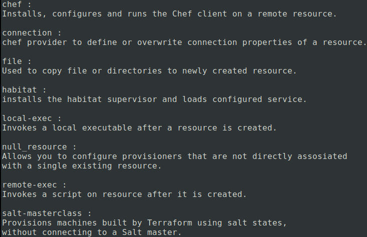
Defining a Provisioner :
Add a provisioner block within a resource block.
Multiple provisioner blocks can even be added.
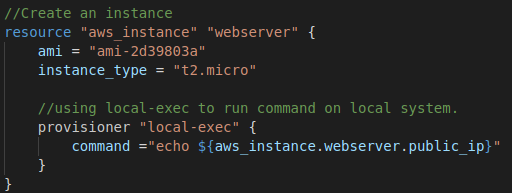
Running provisioners :
Provisioners by-default run only when a resource is created, not during updating or any other lifecycle.
If a creation-time provisioner fails, resource is marked as "tainted".
A tainted resource will be planned for deletion and recreation upon next terraform apply.
Failure Behaviour :
By default, provisoner that fail cause an error,
but by using "With_on_failure", we can correct it.
The values it uses are :
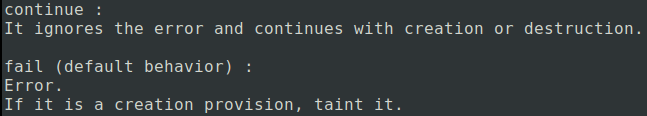
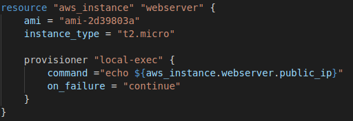
Destroy Provisioners :
Provisioners can be defined that run only during a destroy operation.
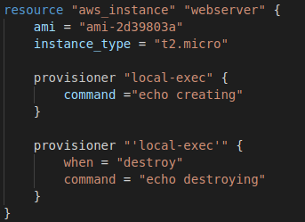
Modules
Terraform and AWS
VPC's
EBS Volumes
User Data
RDS
IAM
AutoScaling
Elastic Load Balancer (ELB)
Application Load Balancer (ALB)
Elastic Beanstack
Packer
notes
Docker on ECR and ECS
notes
AWS EKS
notes
![]()